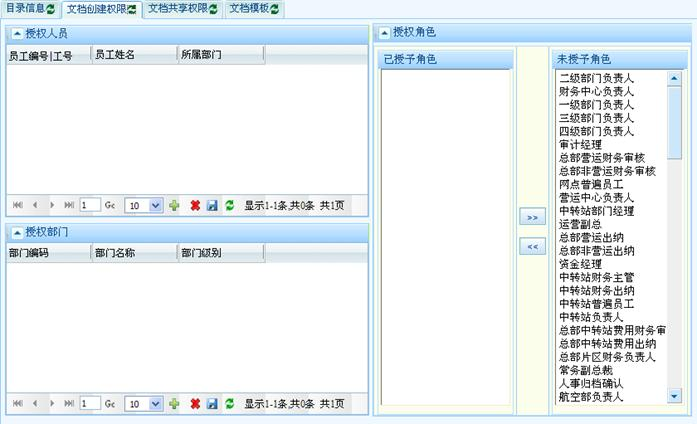

在文档目录树中选择子目录，再选择【文档创建权限】，进入此功能界面。文档创建权限可以授权给人员、机构、角色。授权后的人员，角色，部门内的操作员可以拥有该文档目录下文档的创建权限。每种类型都可以多选。

文档创建权限总界面

人员授权弹出界面

部门授权弹出界面
| 9.1.2 文档创建权限 |
在文档目录树中选择子目录，再选择【文档创建权限】，进入此功能界面。文档创建权限可以授权给人员、机构、角色。授权后的人员，角色，部门内的操作员可以拥有该文档目录下文档的创建权限。每种类型都可以多选。

文档创建权限总界面
人员授权弹出界面
部门授权弹出界面